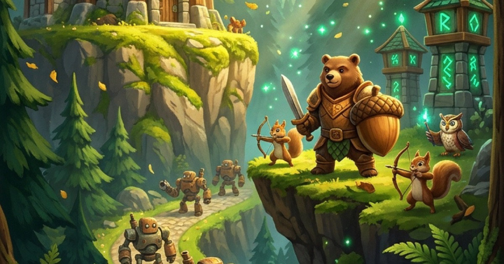

Acornia: Tower Defense
Offline-first 3D portrait woodland tower defense strategy game (English & Turkish).

Overview (EN)
- 50 Campaign Stages: 13 distinct regions scaling up to 12 build pads, 8 rune altars, and 14-wave boss sieges.
- 8 Towers & 16 Evolutions: Branching Tier-3 evolutions with live elemental Synergy Combos.
- 4 Playable Heroes: Active battlefield control, class stances, and high-impact ultimates.
- Private & Offline: Zero login wall, zero ad or analytics SDKs, portable
PK1:... save backups.
Genel Bakış (TR — Acornia: Kule Savunması)
- 50 Sefer Bölümü: 13 farklı bölgede 12 kule yuvası, 8 rün sunağı ve 14 dalgalık boss kuşatmaları.
- 8 Orman Kulesi & 16 Evrim: Anlık element Sinerji Komboları ile 3. kademe uzmanlık dalları.
- 4 Oynanabilir Kahraman: Patikada doğrudan yönlendirme, sınıf uzmanlığı ve aktif yetenekler.
- Tamamen Çevrimdışı: Hesap açma, reklam veya takip SDK'sı yoktur;
PK1:... yedekleme desteği sunar.